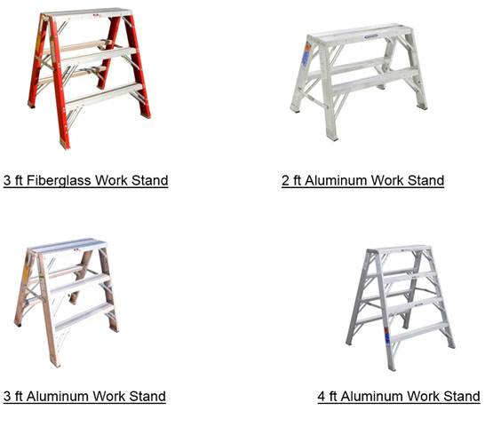

22.S Work Stands (Portable Work Platforms)
22.S.01–22.S.06
22.S.01 Work stands shall be designed in accordance with either ANSI A14.2 (aluminum) or ANSI A14.5 (plastic/fiberglass). > See Figure 22-2.
22.S.02 Work stands shall not have a working height exceeding 4 ft (1.2 m).
22.S.03 The load rating shall be clearly and legibly marked and the work stand shall not be loaded beyond the manufacturer's rated capacity. The maximum intended load includes the worker and all tools and supplies.
22.S.04 When work stands are used adjacent to stairs or ramps where a fall to a different level could occur, guardrails (as defined in 21.F.01.b) or other fall protection shall be provided (increased in height by an amount equal to the height of the work stand. > See Section 21.A.04.
22.S.05 Work stands shall inspected for visible defects on a daily basis and shall be maintained with no structural damage.
22.S.06 Job-built work stands are not allowed. Saw horses shall not be used as work stands.
FIGURE 22-2
Work Stands (Portable Work Platforms), Examples

{kind=link}